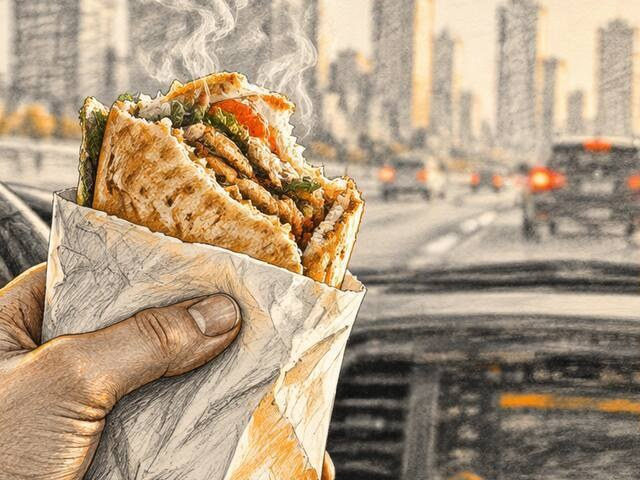

لماذا
منصة القيمة من الطازج
توصية وخطة تجربة للقرار
رد على موجز منصة القيمة، النسخة 3نوفمبر 2026
توصية وخطة تجربة للقرار
ابدأ بالقرار لا بالسوق. أكّد أننا لا نطلب إطلاقًا شاملًا، بل تجربة تحمي القرار. لا تذكر أرقام أثر لا نملكها، وقل صراحة إن الحجم يُقاس في التجربة.
النزول تحت 15 يضعنا في سباق مع علامات أكبر في المقلي. التميز المتاح في المنتج لا في الرقم. إن سُئلت عن المطاعم المحلية: محل محلي يبيع ربعًا مع أرز بـ 16 بلا مشروب، لكنه ليس سلسلة.
أكّد أن إبقاء الفروج خارج المنصة قرار مقصود لحماية أكبر صنف، وهو جواب مباشر على قلق الموجز.
لا تقل إن أسعار الطازج مرتفعة. قل إن تركيبة الوجبة هي ما يرفعها، وهذا ما يبرر فصل المشروب.
القرار النهائي يعتمد على عمولات التطبيقات، وهي عند الطازج. اطلبها صراحة في هذه الشريحة.
أقوى شريحة أمام المالية. لا تفترض هامش المشروب رقمًا، حتى لو كان معروفًا أنه عالٍ عادة. اطلب التكلفة.
لا نخترع أسعارًا لتطابق السوق. الأصناف الجديدة بلا مرجع سعري تُباع بقيمة مكوناتها كاملة، فلا تصبح بديلًا أرخص للوجبات الرئيسية: هذا جواب مباشر على قلق الطازج. اعترف أن صحن كباب (19) وبرجر عربي وملفوف (20) فوق السقف، واعرض حذفهما. اعترف أن أسعارنا مع المشروب ليست الأرخص، وهذا مقصود: نتنافس بالمشوي.
صور أكل الطازج من منيو الكاونتر الحالي. الأصناف الجديدة عليها شارة "بسعره الكامل": هي لا تنافس الوجبات الرئيسية على السعر.
اقترح التمويل المشترك مع بيبسيكو دون وعد. أسعار الوسط والكبير افتراض حتى يؤكدها الطازج.
كل سور له مؤشر. إذا سُئلت "كيف نعرف أنه نجح؟" أشر إلى العمود الأخير.
توقف بعد السطر الأول. لا تشرح كثيرًا. الفكرة تخدم الهدف الثالث في الموجز: حماية العلامة.
اعرضها كما قُدّمت أولًا. قوتها أنها تبيع مناسبة جديدة لا سعرًا أقل، وهذا بالضبط ما يطلبه الموجز: زيارات إضافية لا منقولة.





المشاهد كما في العرض الأصلي، مع تعديل الختام: "زِدها بيبسي" بدل "خلها وجبة"، لأن الترقية هي ما يرجّع الخصم.
احترم العمل الأصلي: التحسين لا يغيّر الفكرة، بل يربطها بالمنصة والتسعير والقياس.
هذه شريحة التوصية الإبداعية. توقف بعد السطور الثلاثة.
الفكرتان لا تتعارضان: الأولى تقول متى، والثانية تقول أي واحد.


هذا ما يحوّل الإبداع من رأي إلى أداة قابلة للقياس. كل تنفيذ له مؤشر.
"بين وبين" توفر ميزانية بناء اسمين: الاسم هو الحملة. إن فضّل العميل اسمًا آخر، تبقى "بين وبين" فكرة الحملة.
الأرقام مقترحة. شدد أن قيمتها في الاتفاق المسبق: لا نقيّم النتائج بمعايير نختارها بعدها.
ميزانية الإنتاج والإعلام تُقدَّم بعد اعتماد الاتجاه والفروع. لا نضع رقمًا الآن.
المخاطر الثلاثة كلها تُقاس في التجربة قبل أي تعميم.
اختم بسؤال مباشر: "هل نعتمد التجربة بهذه المعايير؟"
شكرًا لكم